星球：南半球聊财经 ｜ 星主：Jason 不跪 ｜ 当天发帖数：15 条 ｜ 图片总数：35 张
今日要点速览
今天 Jason 转发解读的机构研报，主线可以串成四条：
- 美国 6 月非农大爆冷——只新增 5.7 万人（预期 ~9–11.5 万），前两个月还被下修 7.4 万，三个月均值掉到 11.1 万。失业率虽降到 4.2%，但靠的是劳动参与率下滑（"人退出找工作"而非"找到工作"）。市场解读为"经济没崩、但美联储更不敢加息"，短期利好黄金与美股、美元承压（帖 2、10、13）。
- 中国出口竞争力仍在碾压——5 月中国乘用车在欧洲市场份额首超日本；中国已占欧盟进口的 23%，靠的是劳动力、融资、能源、土地四重成本优势 + 低估汇率（帖 3、8）。
- 中国内需偏弱、全靠政策托底——社零转正主要靠"以旧换新"补贴前置释放需求；物业费收缴率连续四年下滑；地方政府债务困境真实；端午出行强但人均消费弱（帖 1、7、11、15）。
- 资金面：A 股结构切换 + 外资仍在走——宽基 ETF 大幅缩水、科技主题 ETF 逆势扩张；6 月主动外资仍净流出，但机构对中国仓位从"低配"转"小幅超配"（帖 6、12）。
此外还有苹果折叠屏需求分化（中国 iPhone 意愿走弱、帖 5）、瑞银大宗商品长期价格预测（帖 4）、日本财政改善+散户 risk on+主权 AI 机器人战略（帖 9）、以及俄乌战争成本力竭（帖 14）。
一句话总结今天的画面：美国就业转弱、利率见顶预期升温；中国"外强内弱"——出口靠成本碾压、内需靠政策续命；钱在往科技和黄金里挪。
帖 1 ｜ 10:14 ｜ 财通：地方政府债务的真实困境 #TAX#
帖子原文：
财通：我们认为 2025 年审计报告一定程度反映出了地方政府债务的真实困境。 #TAX#
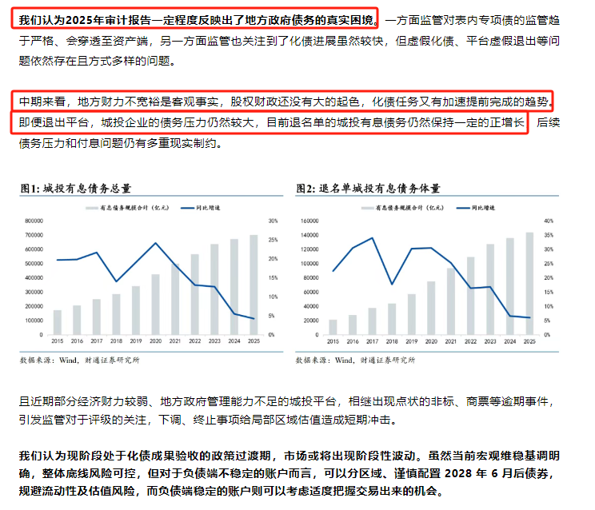
一句话核心： 官方审计报告"变相承认"地方政府（尤其城投平台）的隐性债务仍在滚雪球，化债任务任重道远。
背景与关键数据： "城投"= 地方政府融资平台，是过去十几年地方政府绕开预算限制、通过公司借钱搞基建的主体，它们的债务是所谓"隐性债务"的大头。图里两张折线柱状图显示：城投有息债务总量从 2015 年约 30 万亿一路涨到 2025 年约 70 万亿以上（图1），即便是那些"已退出融资平台名单"的城投，有息债务体量也仍在正增长（图2）。同比增速虽然从 2015 年前后的 25%+ 降到 2025 年的个位数，但绝对规模还在创新高。"化债"= 化解债务，指用置换债、展期、降息等方式减轻地方还本付息压力。
图片解读： 两张图都是"柱子代表存量规模（左轴，亿元）、蓝线代表同比增速（右轴，%）"。看点在于——蓝线一路向下（增速放缓），但柱子一路向上（存量继续变高）。这传达的信号是：化债政策压住了"增速"，却没能让"总量"掉头，说明存量包袱依然沉重。财通给出的操作建议是"2028 年 6 月后债券可适度把握交易机会"，暗示中短期城投债仍有波动风险。
为什么重要 / 对市场的含义： 地方债务是中国宏观最大的灰犀牛之一。它直接影响：城投债信用利差、地方财政对基建/民生的支出能力、以及货币政策必须保持宽松（否则利息滚不动）。对资产价格而言，它是"利率难以大幅上行、人民币难以大幅走强"的结构性原因之一。
延伸知识： "隐性债务"这个概念可以类比家庭——政府的"明账"（法定债务/一般债+专项债）像房贷，是登记在案的；城投的"隐性债"像用信用卡和网贷垫的钱，不进政府正式资产负债表，但真出事还得政府兜底。2015 年起的"地方债置换"就是把高息的隐性债换成低息的、期限更长的政府债券，本质是"以时间换空间"。理解这条主线，就能理解为什么中国利率长期易下难上。
帖 2 ｜ 10:20 ｜ Bloomberg：美国 6 月就业低于预期，黄金反弹 #金融#
帖子原文：
bloomberg：美国 6 月份的就业数据低于预期，交易员对加息预期消退，黄金反弹 #金融#
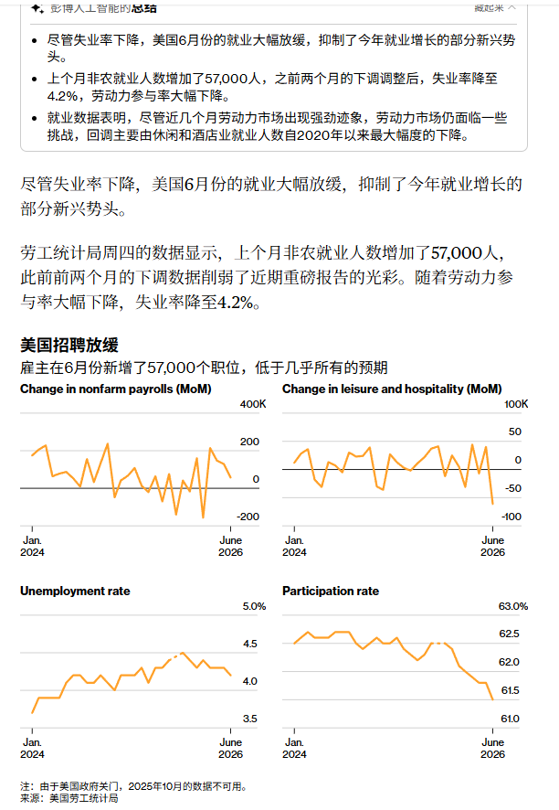
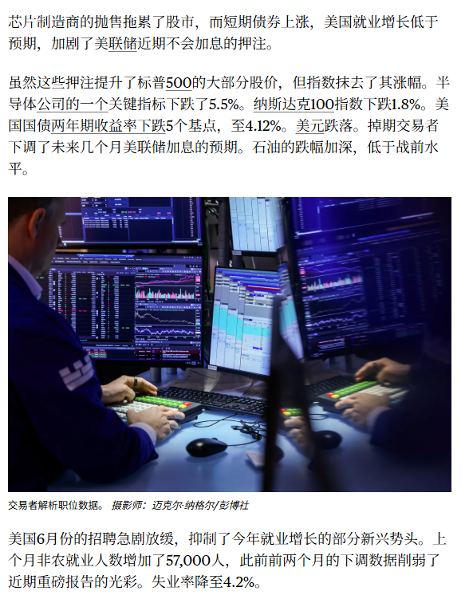
一句话核心： 6 月非农大幅走弱 → 市场认定美联储不会再加息 → 黄金上涨、美元和油价下跌。
背景与关键数据： "非农就业（Nonfarm Payrolls, NFP）"是每月最重磅的美国经济数据，衡量除农业外新增了多少工作岗位。6 月只增 5.7 万人（远低于预期），且前两个月被下修。彭博配图指出：半导体等风险资产因就业弱一度下跌（标普关键指标 -5.5%、纳指100 -1.8%），美国 2 年期国债收益率下跌 5 个基点至 4.12%（收益率跌=债券涨=市场预期利率更低），美元走弱，油价跌破"战前水平"。1 个基点 = 0.01 个百分点。
图片解读： 第一张图是彭博的四联小图（2024 年初至 2026 年 6 月）：①非农月增（Change in nonfarm payrolls）掉到接近 0；②休闲和酒店业就业（leisure and hospitality）出现 2020 年以来最大降幅，掉到 -100K 附近——这是服务业需求转弱的先行信号；③失业率（Unemployment rate）在 4.2% 附近；④劳动参与率（Participation rate）明显下滑到 61% 出头。注：图注提到"因政府关门，2025 年 10 月数据不可用"。第二张图是彭博交易员盯盘的实景照 + 正文，强调"就业弱→加息预期消退"的传导链。
为什么重要 / 对市场的含义： 就业是美联储双重使命（通胀+就业）里的另一半。就业转弱意味着美联储加息的理由消失，这对黄金（无息资产，利率越低越香）、成长股（贴现率下降）偏利好，对美元偏空。这也是今天多条帖子（10、13）反复围绕的核心宏观事件。
延伸知识： 为什么"失业率下降"反而不是好消息？因为失业率的分母是"劳动力人口"（在工作或在找工作的人）。如果很多人干脆退出劳动力市场（不找了），分母变小，失业率会"假性"下降。摩根士丹利（帖 10）就测算：若参与率不掉，失业率其实会升到 4.6%。这提醒我们看就业不能只看一个数，要交叉验证参与率、时薪、修正值。
帖 3 ｜ 10:24 ｜ 日经：中国乘用车欧洲份额首超日本 #经济数据#
帖子原文：
日经：5 月中国乘用车在欧洲汽车市场的份额首次超过了日本……中国的汽车出口在 2023 年以 491 万辆超过日本，首次跃居世界首位。3 年内增至 2 倍，规模相当于丰田 2025 年全球销量（约 1053 万辆）。艾睿铂估算称，如果目前的出口速度持续，2026 年出口量将比 2025 年增加 41%，达到 1000 万辆。 #经济数据#
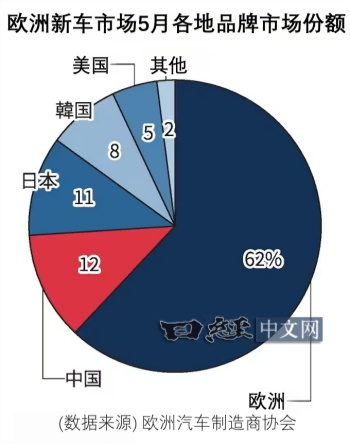
一句话核心： 中国车在欧洲市场份额历史性反超日本，靠的是"同款更便宜"的成本竞争力。
背景与关键数据： 欧洲汽车制造商协会（ACEA）从 4 月起把吉利等 3 家中国企业纳入统计，并把沃尔沃计入母公司吉利。价格对比：比亚迪小型电动车"海豚冲浪增强"在德国 26990 欧元起，比雷诺同级"雷诺 5 E-Tech"便宜 3%。中国 2023 年出口 491 万辆首超日本，3 年翻倍，2026 年预计再增 41% 到 1000 万辆——这个体量约等于丰田一年的全球销量。
图片解读： 饼图"欧洲新车市场 5 月各地品牌市场份额"：欧洲本土品牌占 62%（大头），中国 12%、日本 11%、韩国 8%、美国 5%、其他 2%。关键就在中国（12%）已经压过日本（11%）——这是第一次。日经用红色标出中国这一块，视觉上强调"红色（中国）已超过深蓝（日本）"。
为什么重要 / 对市场的含义： 汽车是欧洲工业的皇冠。中国车攻入欧洲腹地，意味着：①欧洲传统车企（大众、雷诺、Stellantis）利润和市占被侵蚀；②欧盟对华加征电动车关税的政治压力会更大（呼应帖 8）；③中国新能源产业链（电池、电机、车规芯片）出口逻辑增强。对投资者是"中国制造业出海"这条长期主线的又一实锤。
延伸知识： "成本竞争力"不是单一因素，而是产业链集群效应——当一个地区把电池、电机、电控、车规芯片、模具、物流都集中在几百公里内，单车成本会系统性下降，这叫"规模经济 + 集聚经济"。日本车企高管那句"欧洲消费者买电动车根本不把日本车列入候选"，说明的是日本在电动化转型上掉队（押注混动/氢能），而不是中国单纯靠补贴。这条主线和帖 8（高盛拆解中国四大成本优势）是一体两面。
帖 4 ｜ 10:26 ｜ 瑞银：大宗商品价格"算命"，黄金长期看 3250 #金融#
帖子原文：
瑞银：大宗商品价格算命，其中黄金：2027 年 4,800 美元/盎司，2028 年 4,250 美元，长期 3,250 美元。 #金融#
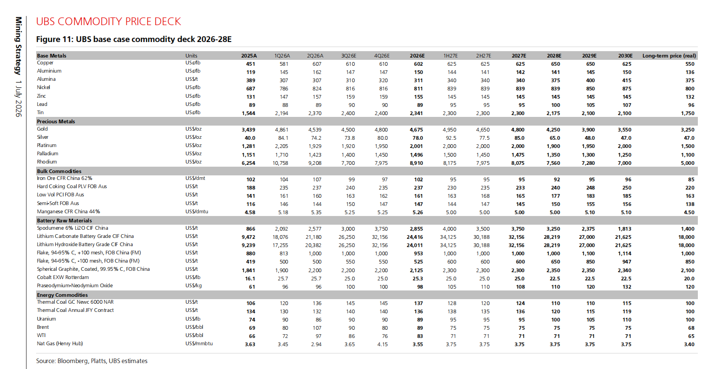
一句话核心： 瑞银最新大宗商品价格预测表——黄金短期还能冲高（2027 见顶 4800），但长期回落到 3250。
背景与关键数据： 这是瑞银 2026-28 年"基准情形"大宗商品价格表（Base Case Commodity Deck）。黄金：2025 实际 3439 美元/盎司 → 2026E 4675 → 2027E 4800（高点）→ 2028E 4250 → 长期 3250。白银：2025 40 美元 → 2027E 85（几乎翻倍）→ 长期 47。 铜、铝、镍、锂、钴、油、气等全品类都有列。注意油价（Brent）：2026E 89 → 长期回落到 68 美元。
图片解读： 这是一张密集的数据表，行是商品（基本金属/贵金属/大宗原料/电池原料/能源），列是年份（2025A 实际、各季度预测、2026E-2030E、长期实际价）。看表要抓三点：①贵金属这两年被大幅上修（黄金、白银、铑都在高位）；②电池原料（锂）从 2025 低点大幅反弹——碳酸锂电池级从 2025 年 9472 美元/吨涨到 2027E 32156，翻了 3 倍多，暗示瑞银认为锂周期见底回升；③能源（油、煤、天然气）长期看跌，Brent 长期 68 美元。
为什么重要 / 对市场的含义： 大行的价格 deck 是很多商品股票估值模型的输入。黄金 2027 见顶后回落，意味着瑞银把当前的贵金属牛市定性为"周期性 + 避险驱动"而非"永久重定价"；锂大反弹的预测对锂矿股（如天齐、赣锋）是关键信号；油长期看跌则压制传统能源股的长期估值。
延伸知识： 注意"名义价"和"长期实际价（long-term real price）"的区别。表最后一列"Long-term price (real)"是按不变购买力折算的"均衡价格"，代表分析师认为剔除周期波动后该商品的中枢。黄金现价 4675、长期 real 3250，缺口约 30%，说明瑞银认为现在的金价里含了很大一块"周期溢价/避险溢价"，长期会均值回归。理解"周期价 vs 中枢价"能帮你判断一个商品是"贵了"还是"进入新常态"。
帖 5 ｜ 10:36 ｜ 瑞银 Evidence Lab：iPhone 需求分化，中国走弱 #美股#
帖子原文：
瑞银：Evidence Lab 调查显示，全球未来 12 个月 iPhone 购买意愿出现明显分化。美国约 20%（同比 +300bp）、英国约 18%（+600bp）、德国约 14%（+400bp）、日本约 13%（+100bp），但中国约 15%（同比 -100bp、环比 -500bp）……中国消费者预期换机周期升至 26.8 个月，环比 +4.8 个月、同比 +3.1 个月，创调查新高。 #美股#
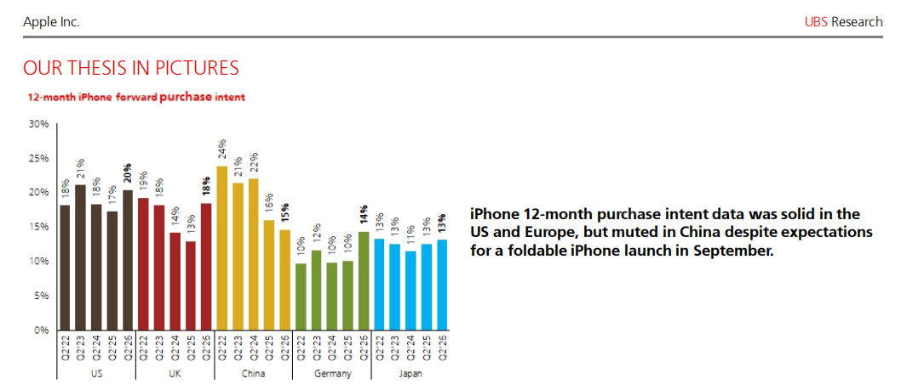
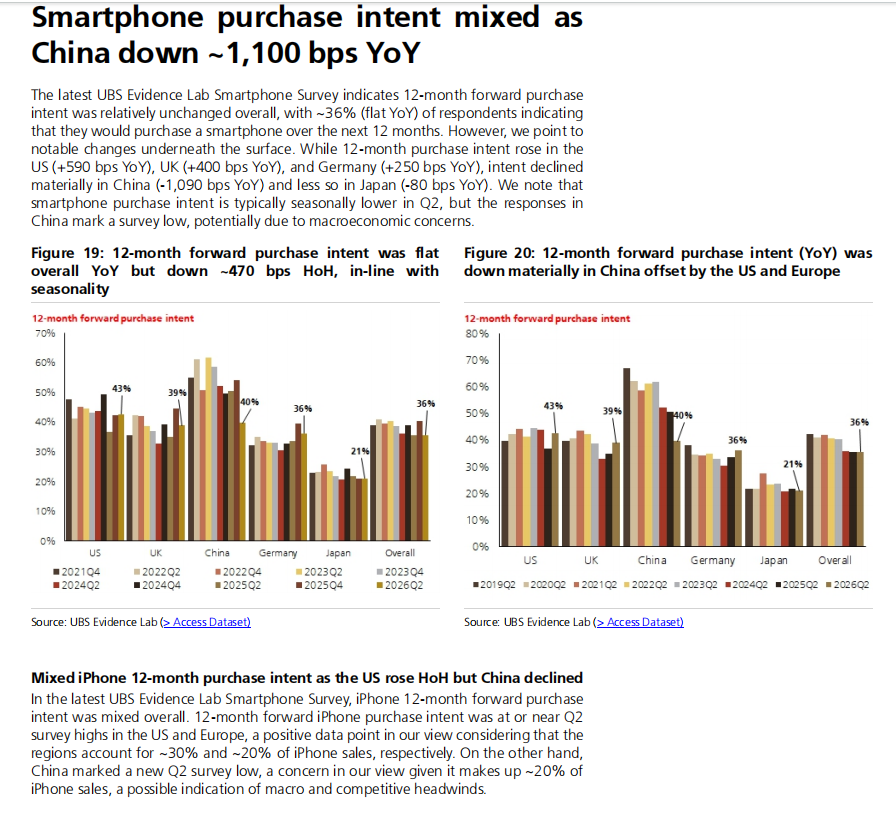
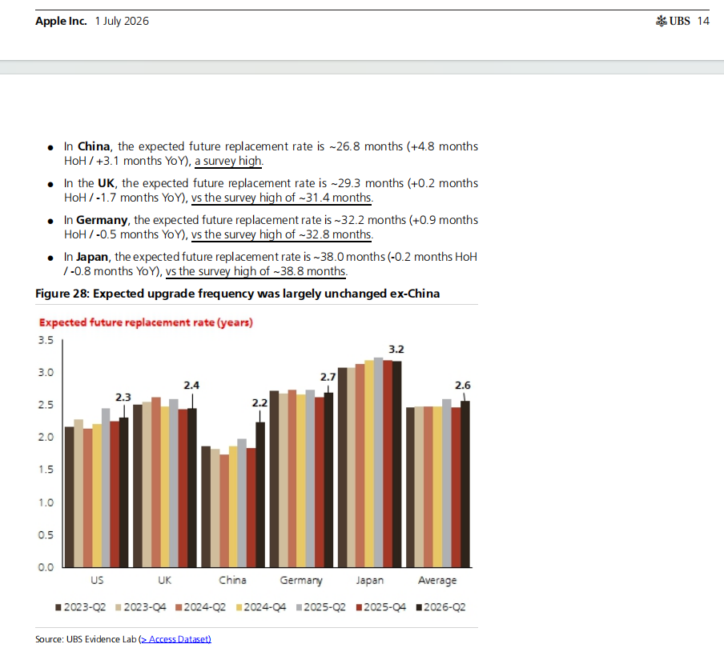
一句话核心： 美欧 iPhone 购买意愿回升，唯独中国走弱、换机周期拉长到历史新高——苹果在华边际压力真实，但"苹果折叠屏"在中国期待值极高。
背景与关键数据： "购买意愿（purchase intent）"= 受访者未来 12 个月打算买的比例。"bp（基点）"= 0.01 个百分点。中国智能手机整体意愿同比大降约 1090bp。折叠屏调查很有意思：普通折叠屏"净兴趣"降到约 -8%（多数人无感），但苹果折叠屏净兴趣仍达约 39%，中国更高达约 63%——说明消费者不爱"折叠屏"这个品类，而是信"苹果做的折叠屏"。愿为苹果折叠屏付高价（预期 ASP 2000-2500 美元）的比例中国最高（约 28% 愿付 ≥1.45 万元）。
图片解读：
- 图1（"OUR THESIS IN PICTURES"）：各国 iPhone 12 个月购买意愿柱状图，最右侧 2026Q2（加粗）——美国 20%、英国 18%、中国 15%、德国 14%、日本 13%。视觉上美英柱子在抬升，中国这组在往下走。
- 图2：智能手机整体购买意愿，中国那组（第三簇）2026Q2 明显低于往年，配文"China down ~1,100 bps YoY"。
- 图3（Figure 28）：预期换机周期（年），中国最新 ~2.2 年、日本最长 ~3.2 年、平均 2.6 年。中国换机周期在拉长，是需求走弱的直接体现。
为什么重要 / 对市场的含义： 中国约占 iPhone 销量的 20%，中国意愿创调查新低是苹果营收的实质逆风；但折叠屏（预计 9 月发布）是潜在催化剂，尤其中国高端用户对"苹果折叠"接受度惊人。对苹果股价，这是"存量承压、增量看折叠屏成败"的多空拉锯。也利好折叠屏产业链（铰链、UTG 玻璃、柔性屏）。
延伸知识： "换机周期"是消费电子的核心慢变量。周期从 24 个月拉到 27 个月，看似只多 3 个月，但对全球十几亿存量用户来说，等于每年少卖上千万台。拉长的原因通常是：手机性能过剩（挤牙膏式升级）、经济不确定下捂紧钱包、以及二手/以旧换新市场成熟。这解释了为什么苹果拼命想用折叠屏这种"形态创新"重新点燃换机欲望。
帖 6 ｜ 11:00 ｜ 摩根士丹利：6 月中国股市外资仍流出 #A股#
帖子原文：
摩根斯坦利：中国股市 6 月仍然出现主动外资流出约 15 亿美元，同时，中国国内被动资金卖出规模高达 206 亿美元……但有个改善，GEM 基金经理的中国组合权重下降幅度小于 MSCI 基准权重下降幅度，因此中国从低配转为小幅超配。 #A股#
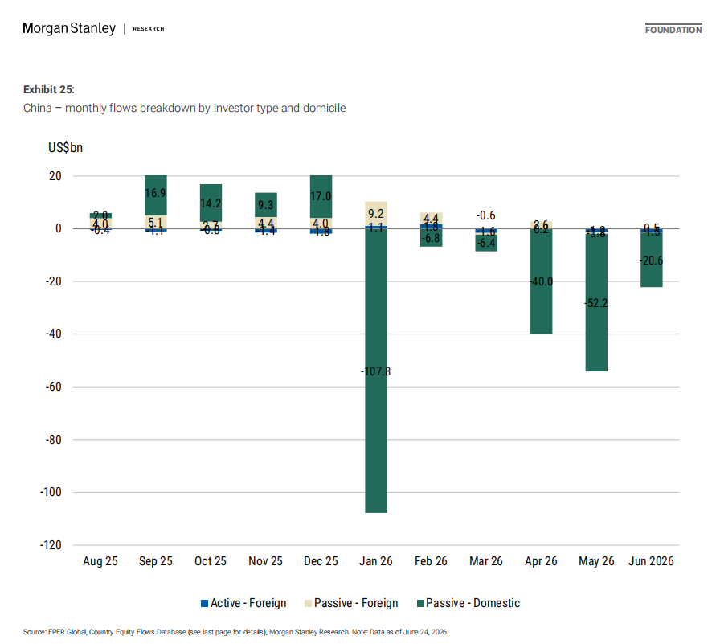
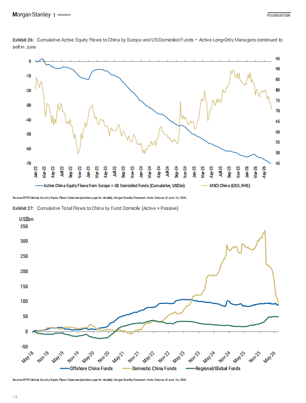
一句话核心： 6 月外资和国内被动资金都在卖中国股票，但主动基金经理相对基准反而"小幅超配"了中国。
背景与关键数据： "主动外资"= 主动选股的海外基金；"被动资金"= 跟踪指数的 ETF。6 月主动外资流出约 15 亿美元，国内被动资金卖出高达 206 亿美元。但"超配/低配"是相对 MSCI 基准而言：当基金经理砍中国仓位砍得比基准指数砍得还少时，相对权重反而上升——从低配变成小幅超配，这是情绪边际改善的信号。GEM = Global Emerging Markets（全球新兴市场）基金。
图片解读： 摩根士丹利 Exhibit 25 是"中国月度资金流按投资者类型和来源地拆分"（柱状图，US$bn，Aug25–Jun26）。深绿色是"被动-国内（Passive-Domestic）"，1 月出现 -107.8 的巨量卖出，5 月 -52.2、6 月 -20.6，是拖累主力；蓝色"主动-外资"和米色"被动-外资"体量小得多。图很直观地说明：近一年砸盘的主力是国内被动资金（ETF 赎回），不是外资。 这和帖 12（宽基 ETF 缩水）是同一件事的两个视角。
为什么重要 / 对市场的含义： 外资态度是 A/H 股情绪的风向标。这条帖子的关键洞察是"卖压来自国内被动资金而非外资"，且外资主动仓位在相对回补——说明外资对中国的极度悲观可能在缓和。但要注意"相对超配"不等于"真金白银大买"，只是没那么低配。
延伸知识： 理解"超配（overweight）/低配（underweight）"是读懂机构行为的钥匙。它永远是相对一个基准而言的。比如 MSCI 新兴市场指数里中国占 25%，某基金只放 20%，就是"低配 5 个点"。基金经理不是"看多才买"，而是在基准框架里做相对下注。所以"从低配转超配"哪怕伴随净流出，也代表相对信心在修复。这也是为什么专业资金流数据要区分"主动 vs 被动、外资 vs 内资"。
帖 7 ｜ 11:08 ｜ 花旗：6 月社零预计转正，但靠补贴前置 #经济数据#
帖子原文：
花旗：预计 6 月中国社会消费品零售总额同比 0.6%，较前值 -0.6% 转正。原因有两个：第一，基数更有利。第二，更重要的是，以旧换新补贴加速落地……本质上是把一部分未来需求提前释放。 #经济数据#
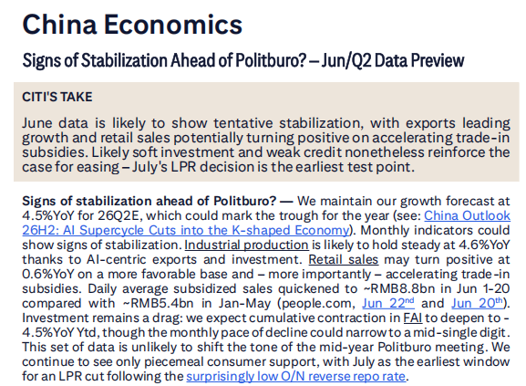
一句话核心： 6 月社零由负转正，但主要是"以旧换新"补贴把未来的消费提前搬到了现在，不是居民自发复苏。
背景与关键数据： "社会消费品零售总额（社零）"是衡量国内消费的核心指标。花旗预计 6 月同比 +0.6%（前值 -0.6%）。补贴商品日均销售额从 1-5 月的约 54 亿元/天，加速到 6 月 1-20 日的约 88 亿元/天。花旗维持全年 4.5% 增长预测，认为 26 年下半年是全年低点（"K 型经济"）。
图片解读： 花旗"China Economics — Signs of Stabilization Ahead of Politburo?"研报截图。核心观点框（CITI'S TAKE）：6 月数据可能显示"试探性企稳"，出口领跑、社零受补贴拉动可能转正，但投资仍是拖累，7 月 LPR（贷款市场报价利率）决定是最早的宽松观察窗口。图中下划线标注了"以旧换新补贴日均从 54 亿加速到 88.8 亿"的关键数据。
为什么重要 / 对市场的含义： 这条帖子的价值在于"戳破数字的成色"——社零转正听起来是复苏，但花旗提醒这是"透支未来"。对市场意味着：①消费复苏的持续性存疑，补贴退坡后可能回落；②政策宽松（降 LPR）预期升温，7 月是关键窗口；③消费股的反弹更多是"政策交易"而非"基本面拐点"。
延伸知识： "需求前置（pull-forward demand）"是理解刺激政策的关键概念。补贴/降价会让本来打算明年换冰箱的人今年换，短期数据好看，但相当于向未来借需求，退坡后往往出现"断崖"。2009 年的"家电下乡"、美国的"旧车换现金（Cash for Clunkers）"都出现过补贴结束后的销量回吐。看到政策驱动的数据反弹，要多问一句"这是新增需求还是提前的需求？"
帖 8 ｜ 11:20 ｜ 高盛：中国对欧出口双位数增长，四大成本优势 #经济数据#
帖子原文：
高盛：中国对欧洲出口最近几个月保持双位数年化增长。中国现在已经占欧盟进口的 23%……更深层原因是：中国制造业有巨大的成本优势——劳动力、融资、能源、土地成本更低，加上汇率仍然低估 + 激进定价。 #经济数据#
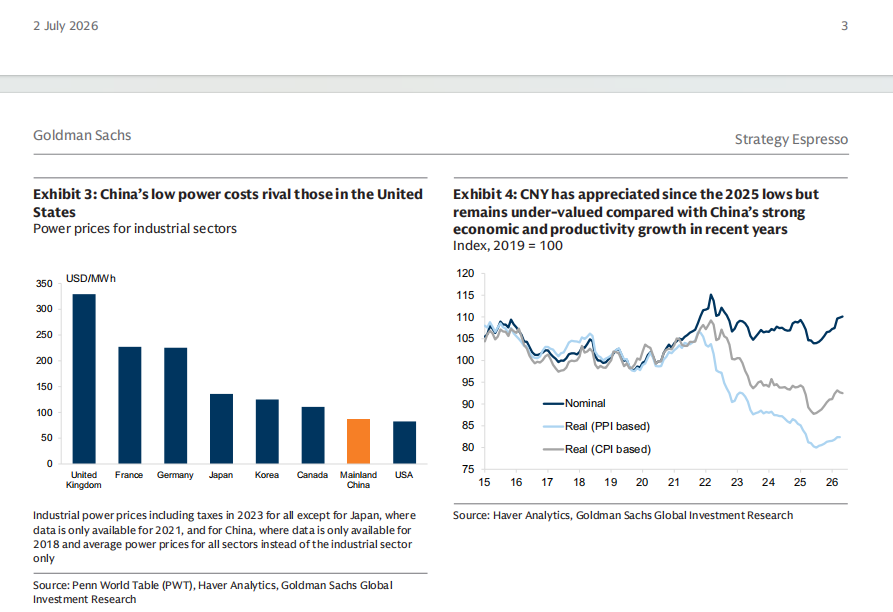
一句话核心： 中国对欧出口猛增、已占欧盟进口 23%，高盛系统拆解出中国制造业的四大结构性成本优势。
背景与关键数据： 高盛列出中国出海加速的原因：表层是国内需求弱、产能过剩逼企业向外找增长；深层是四大成本优势——①劳动力成本相对欧洲仍明显更低；②融资成本更低（国家银行体系 + 大量低息存款让制造业借到便宜的钱，对汽车/化工/电池/光伏这些重资产行业极关键）；③能源成本更低（大量低成本煤电 + 政策扶持光伏，工业电价显著低于英法德日韩、接近美国）；④土地成本更低（居民付高房价实际补贴了工业用地）；外加汇率低估 + 低利润率激进定价。高盛还批评欧洲：过去 5 年中美企业把 40-45% 经营现金流投入增长，欧洲只有约 20%，审批又慢；目前进入欧盟的中国商品不到 10% 面临关税，但 6 月欧盟理事会已要求委员会拿出应对方案，标志政策转向。
图片解读： 高盛"Strategy Espresso"两张图。Exhibit 3"中国工业电价可与美国媲美"：各国工业电价柱状图（USD/MWh），英国最高约 330、法德约 225、日本约 135、韩国约 125、加拿大约 110、中国（橙色）约 88、美国约 82——中国电价接近全球最低。Exhibit 4"人民币自 2025 低点回升但仍被低估"：人民币指数（2019=100）三条线，名义汇率（Nominal）在 108 附近，而基于 PPI 和 CPI 的实际有效汇率跌到 82-92，缺口代表"被低估"的程度。
为什么重要 / 对市场的含义： 这是今天最有"体系感"的一帖，把"中国出口为什么这么强"讲透了。对市场：①支撑中国出口链（家电、汽车、电池、光伏、机械）的长期逻辑；②但也埋下贸易摩擦升级的种子（欧盟政策转向）；③"汇率低估 + 低利润率"意味着这是"以价换量"，出口企业的利润率并不高，投资时要区分"营收扩张"和"利润扩张"。
延伸知识： 能源成本为何是制造业的胜负手？因为电解铝、钢铁、化工、数据中心这类高耗能行业，电费能占到总成本的 30-40%。中国靠煤电 + 大规模光伏压低了工业电价，等于给整个制造业发了长期补贴。这也解释了为什么欧洲在俄乌战争后能源价格暴涨时，其高耗能产业（德国化工巨头巴斯夫等）加速外迁——能源就是工业的粮食，粮价决定谁能活下来。
帖 9 ｜ 11:28 ｜ Bloomberg：日本税收创新高、散户 risk on、主权 AI 机器人战略 #其他国家经济#
帖子原文：
bloomberg：日本在截至 3 月的财政年度内，国家税收创下新高，工资上涨、就业增长和金融资产收益增加，推动了所得税收入……日本居民也逐渐 risk on，上周日本散户投资者创下了创纪录数量的本地股票购买……日元则在最近历史低位之后出现暴涨 #其他国家经济#
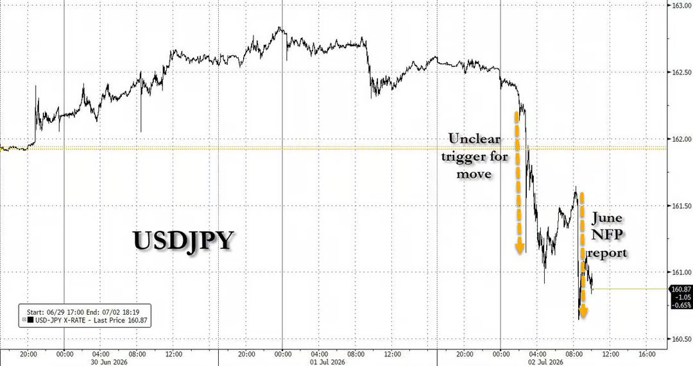
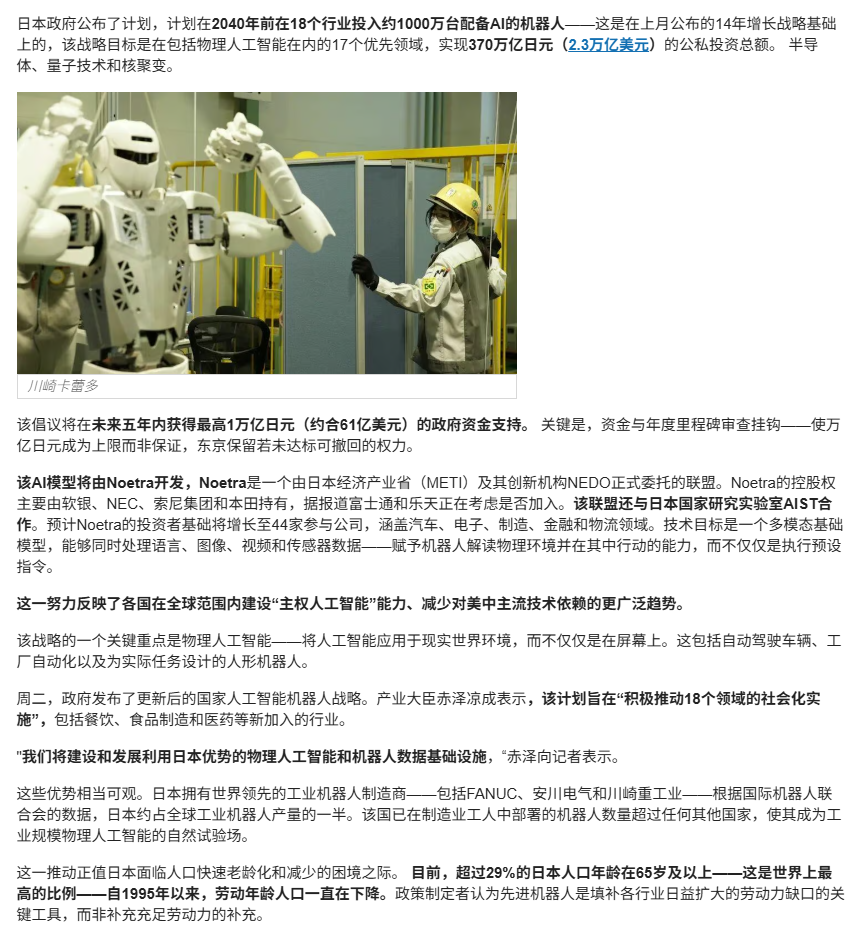
一句话核心： 日本进入"工资涨—税收创新高—散户入市—日元反弹"的正循环，同时政府砸 2.3 万亿美元推"主权 AI + 人形机器人"补人口缺口。
背景与关键数据： 日本税收创历史新高，减轻了高市早苗政府昂贵政策议程的融资压力。散户上周创纪录买入本地股票（在科技股抛售、指数暴跌时抄底）。日元在历史低位后暴涨。另一条线：日本政府计划 2040 年前在 18 个行业投入约 1000 万台 AI 机器人，目标在含物理 AI 的 17 个优先领域实现 370 万亿日元（约 2.3 万亿美元） 公私投资；该 AI 模型由 Noetra 联盟开发（软银、NEC、索尼、本田持股，44 家参与）。背景是日本超过 29% 人口年龄在 65 岁以上（世界最高），机器人是填补劳动力缺口的关键。
图片解读：
- 图（USDJPY 汇率图）：美元兑日元从 6/30 到 7/2，前期在 162.5 附近震荡，7/2 凌晨"不明触发因素"下暴跌，随后"6 月 NFP 报告"进一步砸盘至 160.87（日内 -0.65%）。日元升值 = USDJPY 下跌，图上箭头标出两波下跌，说明美国就业弱 + 未知因素共同推动日元反弹。
- 图（人形机器人 + 正文）：川崎重工的人形机器人与工人协作的照片，配文讲日本"主权 AI"战略、Noetra 联盟、以及用机器人应对老龄化。
为什么重要 / 对市场的含义： ①日本"工资—物价—税收"正循环若持续，日央行加息（正常化）空间打开，是全球利率和套息交易（carry trade）的大变量；②日元反弹会冲击"借日元买美元资产"的套息盘；③"主权 AI"是全球趋势（各国都想减少对美中技术依赖），利好日本机器人链（FANUC、安川、川崎）。
延伸知识： "主权 AI（Sovereign AI）"是近两年的热词，指一国要掌握自己的算力、模型、数据，不完全依赖美国（OpenAI/英伟达）或中国。日本的独特打法是"物理 AI"——不只做屏幕里的聊天机器人，而是把 AI 装进现实世界的人形机器人、工厂、自动驾驶里，因为日本在工业机器人上本就世界第一（占全球产量一半）。这背后是"人口老龄化倒逼自动化"的深层逻辑：当劳动力不够，机器人不是"抢工作"而是"补空缺"。这条主线对理解日本未来 20 年的产业投资极重要。
帖 10 ｜ 11:38 ｜ 摩根士丹利：非农放缓指向美联储按兵不动 #金融#
帖子原文：
摩根斯坦利：最新美国就业报告显示，6 月非农只新增 5.7 万人，低于市场预期，而且前两个月还被下修 7.4 万人……如果不是更多人退出劳动力市场，失业率可能已经升到 4.6%……维持预估美联储今年保持不动，对黄金偏利好。 #金融#
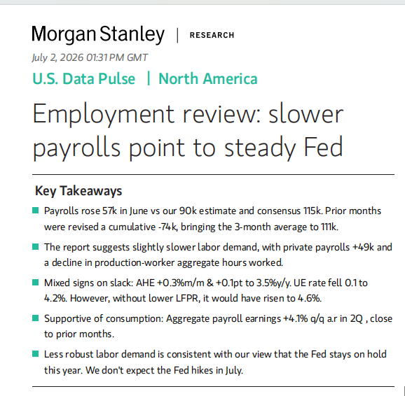
一句话核心： 大摩解读 6 月非农——劳动需求转弱但没到衰退，美联储今年按兵不动，短期利好美股和黄金，但关键看下一份 CPI。
背景与关键数据： 6 月非农 +5.7 万（大摩预期 9 万、市场共识 11.5 万），前两月合计下修 7.4 万，三个月均值降到 11.1 万。私人部门薪资 +4.9 万，生产工人工时下降。平均时薪（AHE）环比 +0.3%、同比 +3.5%。失业率降 0.1 到 4.2%，但劳动参与率（LFPR）下降——若参与率不掉，失业率会升到 4.6%。2 季度总薪资收入同比 +4.1%，支撑消费。大摩结论：劳动需求走弱，预计美联储今年不加息，7 月也不加。
图片解读： 摩根士丹利"U.S. Data Pulse — Employment review: slower payrolls point to steady Fed"（2026-07-02 发布）的 Key Takeaways 五条要点截图，逐条列出：非农 5.7 万 vs 预期、前值下修 -7.4 万、私人薪资 +4.9 万、时薪 +0.3%/+3.5%、失业率 4.2%（剔除参与率影响实为 4.6%）、总薪资 +4.1% 支撑消费、以及"美联储今年按兵不动、7 月不加息"的结论。
为什么重要 / 对市场的含义： 这是对帖 2 彭博新闻的机构级深度解读。核心矛盾在于——就业弱压低加息预期（利好风险资产和黄金），但时薪同比仍 3.5%（通胀黏性风险还在）。大摩点出真正的胜负手是"下一份 CPI"：若 CPI 高、实际利率不下行，黄金上行会受限。所以短期偏多，但别把"就业弱"简单当成一路利好。
延伸知识： "数据修正（revision）"是就业数据里最容易被忽视但极重要的一环。美国非农每月会修正前两个月数据，因为初值基于不完整样本。近一年多次出现"初值强、后来大幅下修"，说明真实的劳动市场比初值疲弱。这也是为什么专业投资者不看单月初值，而看"三个月移动平均"和"修正方向"——连续下修往往是经济动能减弱的早期信号。
帖 11 ｜ 11:47 ｜ 摩根士丹利：楼市回暖不可持续，假期消费"旺丁不旺财" #经济数据#
帖子原文：
摩根斯坦利：我们房地产分析师认为中房之前回暖不可持续，端午节出行数据仍显示客流强但人均消费弱的特征。 #经济数据#
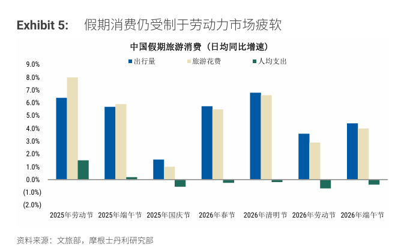
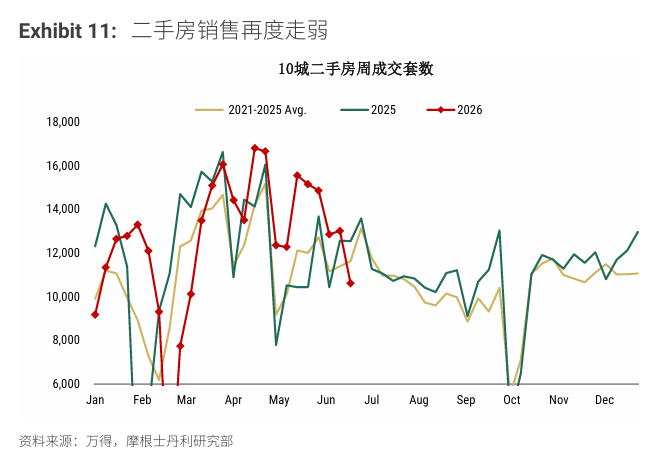
一句话核心： 大摩认为中国楼市的回暖是假象，端午假期"人多但花钱少"，印证内需消费力偏弱。
背景与关键数据： "客流强但人均消费弱"= 出行人数（量）在增长，但每个人花的钱（人均支出）在下降甚至负增长。这是典型的"旺丁不旺财"——愿意出门玩，但捂紧钱包，反映居民对收入预期谨慎、消费降级。
图片解读： 摩根士丹利 Exhibit 5"假期消费仍受制于劳动力市场疲软"，展示中国历次假期旅游消费的日均同比增速（蓝=出行量、米=旅游花费、深绿=人均支出）。关键看深绿色"人均支出"这一项：2025 端午、国庆、2026 春节、清明、劳动节、端午——人均支出几乎全部在 0% 附近或负值，而蓝色出行量普遍 3-6% 正增长。这个"蓝高绿低"的组合，就是"人来了但不花钱"的铁证。
为什么重要 / 对市场的含义： 假期消费是观察居民消费意愿的高频窗口。人均支出持续走弱说明：①消费复苏基础不牢（呼应帖 7 社零靠补贴）；②楼市"回暖"缺乏收入端支撑，大摩判断不可持续；③对消费股、地产股是基本面偏空的提示。这三条帖子（7、11、15）共同勾勒出"中国内需偏弱"的完整图景。
延伸知识： "量价背离"是消费分析的经典信号。旅游人次创新高但人均消费下滑，本质是"用降低客单价换取人流"——景区/酒店/餐饮为了保住客流不得不降价促销。这和零售业的"以价换量"是一回事。判断消费真实强弱，不能只看"多少人出游"这种热闹数据，要盯"人均花了多少钱"这种含金量数据。收入预期不改善，人均消费就很难起来，这是理解中国消费困境的钥匙。
帖 12 ｜ 11:52 ｜ 瑞银：A 股资金结构切换，科技主题 ETF 逆势扩张 #A股#
帖子原文：
瑞银：中国 A 股的资金结构正在发生切换：宽基 ETF 规模大幅收缩，但行业主题 ETF、尤其科技主题 ETF 继续扩张……截至 2026 年 6 月 26 日，全部 A 股宽基 ETF 规模约 9747 亿元，较 2026 年 1 月 9 日 2.66 万亿元的历史峰值下降了 1.7 万亿元……其中科技类行业和主题 ETF 规模已经达到 5415 亿元，较 2025 年底增加 2087 亿元。 #A股#
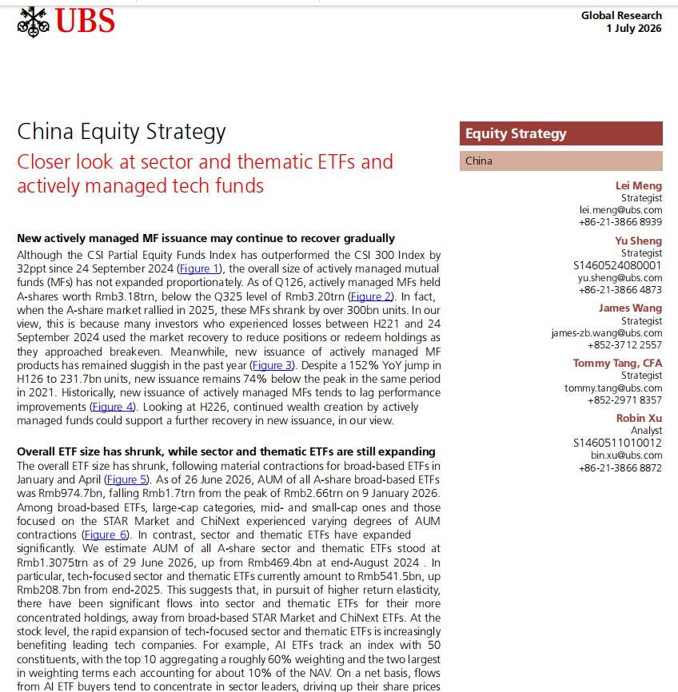
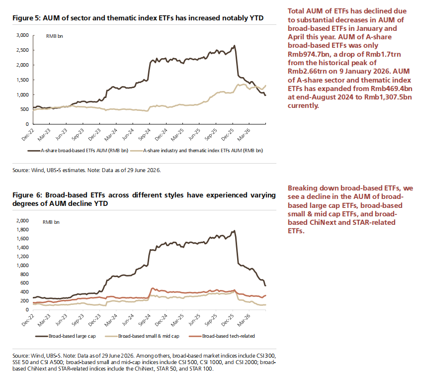
一句话核心： A 股的钱正从"宽基指数"流向"科技主题"——宽基 ETF 缩水 1.7 万亿，科技主题 ETF 却大幅扩张。
背景与关键数据： "宽基 ETF"= 跟踪沪深300、创业板等大盘指数的 ETF；"行业/主题 ETF"= 只押某个赛道（如芯片、AI）的 ETF。关键数据：①主动管理基金持 A 股约 3.18 万亿元（低于 2025 三季度 3.20 万亿），说明去年上涨中很多老投资者是"回本就赎回、减仓离场"（因为 2021 下半年到 2024/9/24 亏损较大，反弹回本就跑）；②宽基 ETF 从 2026/1/9 峰值 2.66 万亿降到 6/26 的 9747 亿，缩水 1.7 万亿；③行业主题 ETF 从 2024/8 的 4694 亿涨到 2026/6 的 1.3075 万亿，其中科技类达 5415 亿（较 2025 底 +2087 亿）。
图片解读： 图1 是瑞银"China Equity Strategy — Closer look at sector and thematic ETFs and actively managed tech funds"研报正文截图（2026-07-01），详述主动基金规模、新发疲软（较 2021 峰值低 74%）、宽基 ETF 缩水、科技主题 ETF 扩张的数据链。图2（另一张）为对应的 ETF 规模变化图表，直观呈现"宽基降、主题升"的剪刀差。
为什么重要 / 对市场的含义： 这是理解 A 股 2026 上半年结构行情的钥匙。资金从宽基撤、往科技主题挤，意味着：①指数（大盘）缺乏增量资金、易震荡；②科技/AI 赛道因资金抱团而超额表现，但也积累拥挤风险；③"回本赎回"说明散户信心尚未真正修复。瑞银特别提到 AI ETF 前 10 大权重占约 60%，资金涌入会推高龙头股价——这是一种自我强化但也脆弱的结构。
延伸知识： "宽基 vs 主题"资金迁移，本质是投资者从"我买整个市场"转向"我只赌赢家赛道"。这在市场缺乏系统性上涨、但存在明确产业趋势（AI）时最常见——大家不相信"水涨众船高"，只相信"结构性机会"。风险在于：主题 ETF 高度集中，一旦赛道逻辑逆转或估值透支，回撤会非常剧烈（因为前 10 大权重占 60%，等于把鸡蛋放少数篮子里）。理解这点，就能明白为什么"结构性牛市"往往波动更大、更考验择时。
帖 13 ｜ 12:01 ｜ Hedgeye：期货市场预期年底加息 1.2 次 #金融#
帖子原文：
Hedgeye：期货市场目前预计年底美联储加息 1.2 次 #金融#
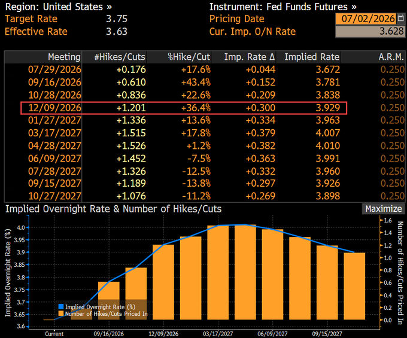
一句话核心： 联邦基金利率期货显示，市场预期到 2026 年底美联储还会加息约 1.2 次（而非降息）。
背景与关键数据： "1.2 次加息"是期货隐含的概率加权预期（不是真的加 1.2 次，而是把不同概率的加息路径折算成一个数）。当前目标利率 3.75%、有效利率 3.63%。注意方向——市场预期的是加息而非降息，这和帖 2/10"就业弱、加息预期消退"看似矛盾，实则说明：就业数据虽让加息预期"降温"，但市场基准仍偏"再加一点"，因为通胀（时薪 3.5%）黏性尚存。
图片解读： 这是彭博的"World Interest Rate Probability（WIRP）"式表格——联邦基金期货隐含的各次会议加息路径。定价日 2026/07/02。表格每行是一次 FOMC 会议（从 2026/7/29 到 2027/10/27），列出累计加息次数、隐含利率等。红框标出 2026/12/09 会议：累计 +1.201 次加息、隐含利率 3.929%。下方柱状图（橙柱=累计加息次数、蓝线=隐含隔夜利率）显示利率路径在 2027/3 前后见顶约 4.01%，之后小幅回落——即市场认为"先小幅加到 4% 出头，然后维持"。
为什么重要 / 对市场的含义： 这条帖子提供了一个"市场定价"的锚。它提醒我们：尽管 6 月就业弱，但期货市场并没有 price in 降息，反而仍隐含小幅加息。这意味着"美联储今年按兵不动"（大摩观点）是相对乐观的假设，若通胀反弹，利率预期可能重新上移，对成长股和黄金是潜在压力。多空双方的分歧点就在通胀。
延伸知识： 联邦基金期货是全球最重要的"利率预期温度计"。它把成千上万交易员用真金白银下注的结果，折算成"市场认为美联储会怎么走"。"隐含加息次数"是概率加权值——比如 60% 概率加一次、40% 不加，就是 0.6 次。看懂这张表，你就能知道"市场已经预期了什么"，从而判断新数据是"超预期"还是"符合预期"。真正推动价格的，永远是"实际 vs 已被 price in 的预期"之差。
帖 14 ｜ 12:11 ｜ CSIS：俄罗斯战场伤亡 140 万，战争成本力竭 #其他国家经济#
帖子原文：
CSIS：俄罗斯军队已在战场上伤亡 140 万人，死亡人数高达 45 万人。战争成本正在力竭。 #其他国家经济#
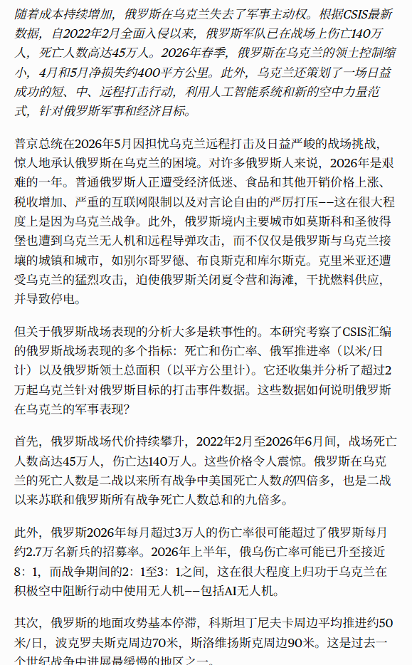
一句话核心： 美国智库 CSIS 评估：自 2022 年 2 月入侵以来俄军伤亡达 140 万、死亡 45 万，战争代价正压垮俄罗斯的持续作战能力。
背景与关键数据： CSIS = 战略与国际研究中心（美国重量级智库）。核心数据：2022/2 至 2026/6，俄军战场死亡约 45 万、伤亡约 140 万——俄乌战争的俄军死亡人数是二战以来所有战争中美国死亡人数的 4 倍多，也是二战以来苏联/俄罗斯所有战争死亡总和的 9 倍多。2026 年每月超 3 万的伤亡率可能已超过每月约 2.7 万的新兵招募，意味着"越打越亏本"。地面攻势基本停滞（科斯坦丁尼夫卡周边日均推进仅约 50 米），2026 年 4-5 月俄净损失约 400 平方公里领土。乌克兰则用 AI 无人机进行成功的远程打击。
图片解读： CSIS 研报正文截图，详述俄军伤亡代价、领土控制缩小、以及乌克兰用 AI 无人机远程打击俄罗斯军事/经济目标的分析。文字强调三点：①俄战场代价持续攀升（伤亡率 vs 招募率倒挂）；②地面攻势停滞（推进速度是"过去一个世纪最缓慢"级别）；③无人机战争改变了战损交换比（伤亡率升至接近 8:1）。
为什么重要 / 对市场的含义： 这条帖子看似地缘政治，实则关乎宏观：①若俄罗斯"战争力竭"推动停火预期，将影响能源价格（油气）、避险资产（黄金）、欧洲重建概念、以及全球风险偏好；②战争的"无人机化 + AI 化"是国防科技的长期主线（呼应帖 9 日本物理 AI）。对投资者是"地缘拐点 + 国防科技"两条线索的交汇。
延伸知识： "伤亡率 vs 招募率倒挂"是判断一场消耗战胜负的关键经济学视角。战争本质是资源消耗的比拼——当一方每月损失的兵力超过其能补充的兵力，人力就进入"负现金流"，这是不可持续的。历史上很多战争不是败在一场决战，而是败在"耗不起"（一战的德国、越战的美国国内)。同理，现代战争的"无人机 + AI"正在改写成本结构：用几千美元的无人机摧毁几百万美元的坦克，交换比彻底逆转，这也是各国疯狂投资军用 AI 的原因。
帖 15 ｜ 12:38 ｜ 克而瑞：物业费收缴率连续四年下滑 #经济数据#
帖子原文：
克而瑞：2025 年，全国物业服务企业（500 强）平均收缴率已降至 71%，连续四年下滑。上市物企收缴率为 78%，中小物企则普遍低于 65%，部分甚至跌破 50%……居民收入预期不稳定，对物业费等固定支出的敏感度提升，部分业主延迟或拒绝缴纳物业费。 #经济数据#
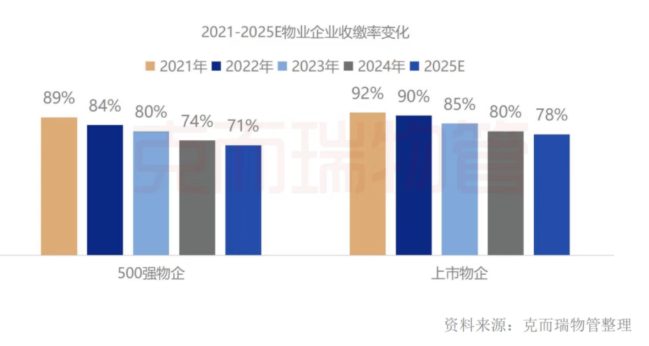
一句话核心： 物业费越来越难收，500 强物企收缴率四年降到 71%，是居民收入预期恶化的微观缩影。
背景与关键数据： "收缴率"= 实际收到的物业费 ÷ 应收物业费。500 强物企平均收缴率降到 71%（连续四年下滑），上市物企 78%，中小物企普遍低于 65%、部分跌破 50%。原因：①多地出台物业费政府指导价、严管普通住宅前期物业费；②业主"不降不缴/服务不改善就不缴"的观望心态；③空置房物业费折扣加剧收缴压力；④居民收入预期不稳，对固定支出敏感度提升，延迟或拒缴。
图片解读： 克而瑞柱状图"2021-2025E 物业企业收缴率变化"。左组"500 强物企"：2021 年 89% → 2022 年 84% → 2023 年 80% → 2024 年 74% → 2025E 71%，逐年下台阶。右组"上市物企"：92% → 90% → 85% → 80% → 78%，同样连续下滑但绝对水平略高。视觉上就是两组柱子逐年变矮，直观呈现"收钱越来越难"。
为什么重要 / 对市场的含义： 物业费是居民最刚性的固定支出之一（比买手机、旅游刚性得多）。连这个都开始拖欠，说明居民现金流压力和收入预期恶化已经渗透到最基础的层面。对市场：①直接利空物业股（现金流和利润承压）；②是"居民资产负债表衰退"的微观证据，呼应帖 7、11 的内需疲软；③也解释了为什么政策必须持续宽松托底。
延伸知识： 物业费收缴率是一个绝佳的"民间经济体温计"。宏观数据（GDP、社零）容易被政策扰动或统计口径影响，但物业费这种"每家每户的小钱交不交"，最真实地反映普通人的现金流紧不紧、对未来有没有信心。类似的"草根指标"还有：外卖客单价、口红销量、当铺生意、共享单车骑行时长。学会从这些微观、高频、难造假的指标里读经济，往往比盯着官方大数据更早、更真切地感知到真实的经济冷暖。
今日全图索引
| 帖号 | 时间 | 主题 | 标签 | 图片文件 |
|---|---|---|---|---|
| 1 | 10:14 | 财通·地方政府债务困境 | #TAX# | post1_img1.png |
| 2 | 10:20 | Bloomberg·美国 6 月就业弱、黄金反弹 | #金融# | post2_img1~6.png |
| 3 | 10:24 | 日经·中国车欧洲份额首超日本 | #经济数据# | post3_img1~3.png |
| 4 | 10:26 | 瑞银·大宗商品价格预测 | #金融# | post4_img1.png |
| 5 | 10:36 | 瑞银·iPhone 需求分化、折叠屏 | #美股# | post5_img1~3.png |
| 6 | 11:00 | 摩根士丹利·6 月中国股市资金流 | #A股# | post6_img1~2.png |
| 7 | 11:08 | 花旗·6 月社零转正靠补贴 | #经济数据# | post7_img1.png |
| 8 | 11:20 | 高盛·中国对欧出口与四大成本优势 | #经济数据# | post8_img1.png |
| 9 | 11:28 | Bloomberg·日本税收/散户/主权 AI 机器人 | #其他国家经济# | post9_img1~4.png |
| 10 | 11:38 | 摩根士丹利·非农放缓、美联储按兵不动 | #金融# | post10_img1.png |
| 11 | 11:47 | 摩根士丹利·楼市回暖不可持续、假期旺丁不旺财 | #经济数据# | post11_img1~2.png |
| 12 | 11:52 | 瑞银·A 股资金结构切换、科技主题 ETF | #A股# | post12_img1~2.png |
| 13 | 12:01 | Hedgeye·期货预期年底加息 1.2 次 | #金融# | post13_img1.png |
| 14 | 12:11 | CSIS·俄罗斯战争成本力竭 | #其他国家经济# | post14_img1~6.png |
| 15 | 12:38 | 克而瑞·物业费收缴率连续四年下滑 | #经济数据# | post15_img1.png |
本报告由自动化任务生成，数据来源为知识星球「南半球聊财经」星主 Jason 不跪 2026-07-02 当日发帖。图片为帖内原图，已随报告一并保存。